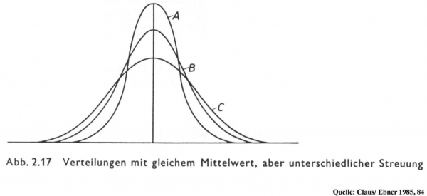
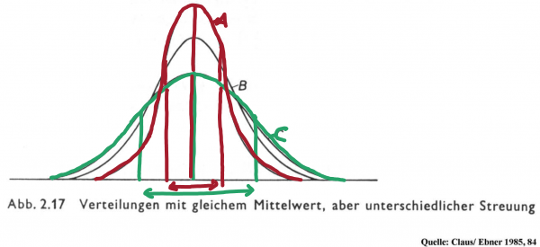
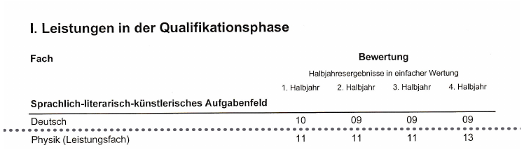
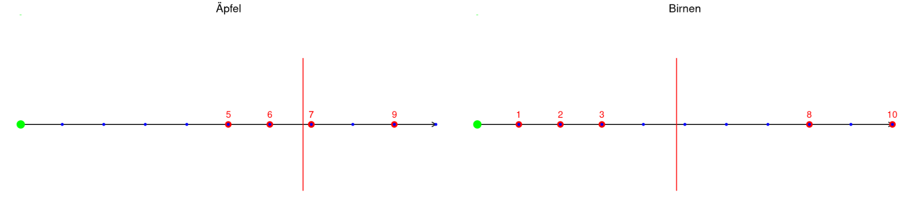
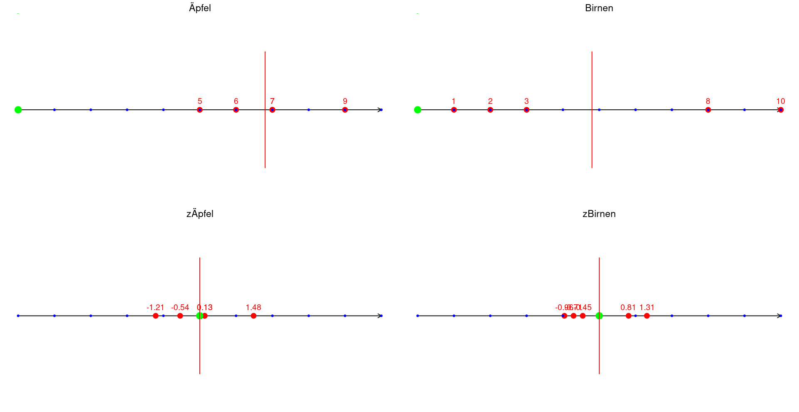

Statistik 1 - Aufgaben
Übungsaufgaben aus dem Tutorium
1 Streumaße
1.1 Aufgabe IQR
Ordne die Interquartilsabstände(IQRs) der Verteilungen nach ihrer Größe ohne zu rechnen.

\(IQR_A < IQR_B < IQR_C\)
Warum?
Der IQR beschreibt den Abstand zwischen dem 25% und 75% Quartil der Verteilung.
Eine mögliche Strategie ist also sich die Fläche als Verteilung vorzustellen. Diese Fläche wird durch den Median in genau 2 Tiele geteilt. Wenn man diese nochmal genau so teilt, dass auch dort die Flächen jeweils gleichgroß sind, sind die Trennlinien die Quartile.
Der IQR ist nun der Abstand dieser Trennlinien.

1.2 Aufgabe Durchschnitt & Median

1. Was ist die Durchschnittsnote im Fach Deutsch? \[ \bar{x} = \frac{\sum_{i=1}^{n} x_i}{n} \]
\(\bar{x} = \frac{x_\textrm{1. Note}+x_\textrm{2. Note}+x_\textrm{3. Note}+x_\textrm{4. Note}}{\textrm{Anzahl der zu addierenden Noten}} = \frac{10+9+9+9}{4}=9,25\)
2. Wie hoch war die durchschnittliche Abweichung (Varianz und Standardabweichung) im Fach Deutsch?
\[\sigma^2 = \frac{\sum_{i=1}^{n} (x_i - \bar{x})^2}{n}\]
\[\sigma = \sqrt{\sigma^2}\]
Varianz:
\[\frac{(10 - 9,25)^2 + (9 - 9,25)^2 + (9 - 9,25)^2 + (9 - 9,25)^2}{4}\]
\[= \frac{(0,75)^2 + (-0,25)^2 + (-0,25)^2 + (-0,25)^2}{4}\]
\[= \frac{0,5625 + 0,0625 + 0,0625 + 0,0625}{4}\]
\[= \frac{0,75}{4} = 0,1875\]
Standardabweichung: \[\sqrt{0,1875} = 0,433\]
3. Ohne zu rechnen: Liegt der Median meiner Physiknote höher oder tiefer als der Mittelwert? Warum?
Der Median ist niedriger, weil die 13 Punkte als “Ausreißer” den Mittelwert mit nach oben ziehen. In Verteilungen mit wenigen hohen Werten bevorzugt man deshalb den Median um die “Lage der Verteilung” zu beschreiben.
2 Z-Werte & Indifferenztabelle
2.1 Z-Werte
Gegeben sind eine Obstschüssel voller Äpfel und eine Obstschüssel voller Birnen. Jeder Apfel und jede Birne werden nach Ästhetik auf einer Skala von 1-10 bewertet und die Bewertungen notiert.
Runde alle Rechnungen auf 2 Nachkommastellen
| Apfel-ID (Apfelnummer) | Bewertung Äpfel |
|---|---|
| 1 | 9 |
| 2 | 7 |
| 3 | 5 |
| 4 | 6 |
| 5 | 7 |
| Birnen-ID (Birnennummer) | Bewertung Birnen |
|---|---|
| 1 | 3 |
| 2 | 2 |
| 3 | 8 |
| 4 | 10 |
| 5 | 1 |
1. Berechne Durchschnitt und Standardabweichung für Äpfel und Birnen
\[\bar{x}_{Äpfel} = 6,8\] \[\bar{x}_{Birnen} = 4,8\]
\[\sigma_{Äpfel} = \pm 1,48\] \[\sigma_{Birnen} = \pm 3,96\]
2. Erstelle einen Zahlenstrahl für die Werte der Äpfel und einen für die Werte der Birnen, markiere auch den Durchschnitt und zeichne das Intervall der Standardabweichung ein.
(Der Grüne Punkt markiert die 0, die Standardabweichung ist nicht eingetragen)

3. Berechne für jeden Wert der Äpfel und für jeden Wert der Birnen den dazugehörigen Zwert
| Apfel-ID | Z-Apfel | Birnen-ID | Z-Birnen |
|---|---|---|---|
| 1 | 1,48 | 1 | -0,45 |
| 2 | 0,13 | 2 | -0,71 |
| 3 | -1,21 | 3 | 0,81 |
| 4 | -0,54 | 4 | 1,31 |
| 5 | 0,13 | 5 | -0,96 |
4. Erstelle nun zwei neue Zahlenstrahle, in der Nähe der ursprünglichen Zahlenstrahlen auf deinem Zettel. Zeichne hier alle Z-Werte ein.

Durch die Z-Transformation haben sich die Werte verschoben. Der Mittelwert wird immer auf die 0 geschoben. Der Rest der Verteilung wird so “zusammengedrückt” oder “auseinandergezogen”, dass die Standardabweichungen auf 1 gesetzt werden. Alle Werte der Verteilung werden relativ dazu angeordnet (Werte die wenig rechts vom Mittelwert lagen liegen wieder wenig rechts vom Mittelwert etc.)
5. Nun vergleichen wir Äpfel mit Birnen: Welche Frucht ist insgesamt am besten bewertet?
Apfel Nummer 1 ist die Frucht, die am weitesten über dem Durchschnitt liegt, da der Z-Wert am höchsten positiv ist.
2.2 Indifferenztabelle
Übung 1
x = Studierende besuchen das Tutorium
y = Studierende bestehen die Statistikklausur
(fiktive Werte)
| Tutorium besucht | Tutorium nicht besucht | Gesamt | |
|---|---|---|---|
| bestanden | 9 | 59 | 68 |
| nicht bestanden | 2 | 14 | 16 |
| Gesamt | 11 | 73 | 84 |
1. Wie hoch ist der relative Anteil aller eingeschriebenen Studierenden die das Tutorium nicht besucht und die Klausur nicht bestanden haben?
\[\frac{14}{84}=16,6\%\]
2. Wie hoch ist der relative Anteil aller eingeschriebenen Studierenden die die Klausur bestanden haben?
\[\frac{68}{84}=80,9\%\]
3. Wie hoch ist der relative Anteil der Tutoriumsbesucher, die die Klausur bestanden haben?
\[\frac{9}{11}=81,8\%\]
4. Wie viel Prozent aller bestehenden Studierenden haben das Tutorium besucht?
\[\frac{9}{68}=13,2\%\]
Übung 2
Die Folgende Kreuztabelle ist nicht fiktiv und wurde mit Werten des Statistischen Bundesamts 2021 erstellt
| Geschlecht x Rauchen | Raucher | Nichtraucher | Gesamt |
|---|---|---|---|
| männlich | 5059 | A | 22684 |
| weiblich | B | C | 23547 |
| Gesamt | 8738 | D | 46231 |
Einer von vielen möglichen Lösungswegen:
\[22684 - 5059 = 17625\]
\[8738 - 5059 = 3679\]
\[23547 - 3679 = 19868\]
\[17625 + 19868= 37493\]
3 Chi-Quadrat und Cramer’s V - Zusammenhang nominale/ordinale Variablen
\[f_{e(ij)} = \frac{\text{Zeilensumme} \cdot \text{Spaltensumme}}{n}\] Die Gleichung kann leicht umgestellt werde zu: \(f_{e(ij)} = \text{Zeilensumme} \cdot \frac{\text{Spaltensumme}}{n}\). Nun wird deutlich, dass “Spaltensumme durch n” ein Prozentsatz ist (äquivalent ergibt sich \(f_{e(ij)} = \text{Spaltensumme} \cdot \frac{\text{Zeilensumme}}{n}\), was im Grunde dasselbe ist).
Dieser Zeilensummenprozentsatz wird nun durch das Malrechnen auf alle Fälle der jeweiligen Spalte der Zelle angewendet.
\[\chi^2 = \sum_{i=1}^{k} \sum_{j=1}^{m} \frac{(f_{b_{ij}} - f_{e_{ij}})^2}{f_{e_{ij}}}\] Für jede Zelle werden die Abstände von beobachtetem und erwartetem Wert (Residuen) berechnet(\(f_{bij} − f_{eij}\)). Da wir nur an den positiven Abständen interessiert sind (wie schon bei der Varianz) wird das Residuum der Zelle quadriert. Nun wird durch den erwarteten Wert geteilt„ weil wir von keinem Zusammenhang, also den erwarteten Werten ausgehen. Alles was wir bisher gerechnet haben wird für alle Zellen gerechnet und zusammengezählt. Das wird in der Gleichung damit erreicht, dass alle Spalten aufsummiert werden (\(\sum^m_{j=1}\)) und diese Ergebnisse für alle Zeilen summiert werden (\(\sum^k_{i=1}\)).
\(0 < \chi^2 < \infty\)
Je größer der Wert desto größer der Zusammenhang (0: kein Zusammenhang)
ABER!!! Abhängig von n und der Variablenzahl.
\(\phi\) korrigiert die Abhängigkeit von n. Es ist sinnvoll in die Analyse mit einzubeziehen, wenn man den Zusammenhang unabhängig von der Gesamtfallzahl interpretieren möchte. \[\phi=\sqrt{\frac{\chi^2}{n}}\] - \(0<\phi<1;\) wobei 0: kein Zusammenhang, 1: maximaler Zusammenhang
\(C\) korrigiert die Abhängigkeit vcon der Variablenanzahl. Der Grund dafür ist, dass der Versuch unabhängig von der Kategorienanzahl interpretieren zu können schief geht. Die Kategorienzahl muss wieder bei der Berechnung von \(C_{max}\) mit einbezogen werden.
- \(0 < C < C_{max};\) wobei 0: kein Zusammenhang, \(C_{max}: max. Zusammenhang\)
\[C = \sqrt{\frac{\chi^2}{\chi^2 + n}}\] \[C_{\text{max}} = \sqrt{\frac{R - 1}{R}} \quad \text{;} R = \text{Minimum von Zeilen- / Spaltenanzahl}\]
Beispiele für R:
\(2\times2\): R = 2
\(3\times4\): R = 3
\(4\times3\): R = 3
Cramer’s V wird für den Vergleich von \(\chi^2\) aus verschieden großen Kreuztabellen genutzt.
- \(0 < \text{Cramer's V} < 1\)
\[\text{Cramer's V} = \sqrt{\frac{\chi^2}{\chi^2_{\text{max}}}} = \sqrt{\frac{\chi^2}{n \cdot (R - 1)}} = \sqrt{\frac{\chi^2}{n \cdot \text{min}(k, m) - 1}}\]
| Cramer’s V bzw. Phi | Interpretation |
|---|---|
| ≤ 0,05 | kein Zusammenhang |
| > 0,05 bis 0,10 | sehr schwacher Zusammenhang |
| > 0,10 bis 0,20 | schwacher Zusammenhang |
| > 0,20 bis 0,40 | mittelstarker Zusammenhang |
| > 0,40 bis 0,60 | starker Zusammenhang |
| > 0,60 | sehr starker Zusammenhang |
3.1 Übung
Die Folgende Kreuztabelle ist nicht fiktiv und wurde mit Werten des Statistischen Bundesamts 2021 erstellt.
| Geschlecht x Rauchen | Raucher | Nichtraucher | Gesamt |
|---|---|---|---|
| männlich | 5059 | 17625 | 22684 |
| weiblich | 3679 | 19868 | 23547 |
| Gesamt | 8738 | 37493 | 46231 |
1. Berechne und interpretiere \(\chi^2\) für die Tabelle.
Erwartete Werte:
| Geschlecht x Rauchen | Raucher | Nichtraucher | Gesamt |
|---|---|---|---|
| männlich | 4287,443 | 18396,56 | 22684 |
| weiblich | 4450,557 | 19096,44 | 23547 |
| Gesamt | 8738 | 37493 | 46231 |
\[\chi^2 = \sum_{i=1}^{k} \sum_{j=1}^{m} \frac{(f_{b_{ij}} - f_{e_{ij}})^2}{f_{e_{ij}}}\] \[= \frac{(5059 - 4287,443)^2}{4287,443} + \frac{(17625-18396,56)^2}{18396,56} + \frac{(3679 - 4450,557)^2}{4450,557} + \frac{(19868 - 19096,44)^2}{19096,44}\] \[= 138,847 + 32,360 + 133,759 + 31,174\] \[= 336,14\] Im Verhältnis zur Größe der Fallzahl ist der Wert ziemlich gering. \(\rightarrow\) kein Zusammenhang
2. Berechne und interpretiere \(\phi\).
\[\phi = \sqrt{\frac{336,14}{46231}} = 0,085\] Der Wert liegt nahe an 0 \(\rightarrow\) kein Zusammenhang
3. Berechne und interpretiere \(C\) und \(C_{max}\).
R = 2 \[C = \sqrt{\frac{\chi^2}{\chi^2 + n}} = \sqrt{\frac{336,14}{336,14 + 46231}} = 0,085\] \[C_{\text{max}} = \sqrt{\frac{R - 1}{R}} = \sqrt{\frac{2-1}{2}} = 0,707\] Verglichen mit dem Maximalen Wert ist C sehr klein \(\rightarrow\) kein Zusammenhang
4. Berechne und interpretiere Camer’s V.
\[\text{Cramer's V} = \sqrt{\frac{\chi^2}{n \cdot (R - 1)}} = \sqrt{\frac{336,14}{46231 \cdot (2 - 1)}} = 0,085\]
In Tabelle schauen \(\rightarrow\) sehr schwacher Zusammenhang
4 Spearman Rho
Auf den Tutoriumsfolien ist eine kurze Einführung, ein Beispiel sowie die Aufgaben weiter unten zu finden.
Übungsaufgabe
In einer kleinen Studie gaben 5 Personen ihre Vorlieben für zwei verschiedene Musikgenres ab. Dabei wurde eine Likertskala mit 1 = “mag ich gar nicht” bis 5 = “mag ich sehr” verwendet.
Frage: Gibt es einen Zusammenhang zwischen den Musikgenres?
Berechne Spearman’s \(\rho\) um die Frage zu beantworten.
| Person | Genre A | Genre B |
|---|---|---|
| 1 | 3 | 4 |
| 2 | 2 | 2 |
| 3 | 5 | 5 |
| 4 | 1 | 3 |
| 5 | 4 | 1 |
| 6 | 3 | 2 |
1. Ränge zuweisen
| Person | Genre A | Genre B | Rang Genre A | Rang Genre B |
|---|---|---|---|---|
| 1 | 3 | 4 | 3.5 | 4 |
| 2 | 2 | 2 | 2 | 2.5 |
| 3 | 5 | 5 | 5 | 5 |
| 4 | 1 | 3 | 1 | 3 |
| 5 | 4 | 1 | 4 | 1 |
| 6 | 3 | 2 | 3.5 | 2.5 |
2. Differenz der Ränge berechnen
| Person | Genre A | Genre B | Rang Genre A | Rang Genre B | Rang Differenz \(d\) |
|---|---|---|---|---|---|
| 1 | 3 | 4 | 3.5 | 4 | -0.5 |
| 2 | 2 | 2 | 2 | 2.5 | -0.5 |
| 3 | 5 | 5 | 5 | 5 | 0 |
| 4 | 1 | 3 | 1 | 3 | -3 |
| 5 | 4 | 1 | 4 | 1 | 3 |
| 6 | 3 | 2 | 3.5 | 2.5 | 1 |
3. Rho berechnen
\[\rho = 1 - \frac{6 \cdot \sum^{n}_{i=1}{d^2_i}}{n \cdot (n^2-1)}\]
\[= 1 - \frac{6 \cdot ((-0.5)^2 + (-0.5)^2 + 0^2 + (-3)^2 + 3^2 + 1^2)}{n \cdot (n^2-1)}\]
\[= 1 - \frac{6 \cdot (0.25 + 0.25 + 0 + 9 + 9 + 1)}{6 \cdot (6^2-1)}\]
\[= 1 - \frac{117}{6 \cdot (36-1)}\]
\[= 1 - \frac{117}{6 \cdot 35}\] \[= 1 - \frac{117}{210}\] \[= 1 - 0.557 = 0.443\]
Mittlere positive Korrelation ==> “Wer Genre A mag, mag wahrscheinlich auch Genre B”
5 Pearson’s R
Eine Zimmerpflanze steht in einem Zimmer welches durch unterschiedliches heizen Temperaturschwankungen unterliegt. In der folgenden Tabelle sind die Zimmertemperatur in \(^\circ\mathrm{C}\) und der Winkel der Pflanzenblätter aufgezeichnet. Wirkt sich die Zimmertemperatur auf den Zustand der Pflanze aus? Berechne dazu den Pearson Korrelationskoeffizienten.
| \(^\circ\mathrm{C}\) | Winkel |
|---|---|
| 15 | 56 |
| 16 | 50 |
| 14 | 44 |
| 14 | 23 |
| 16 | 28 |
\[r = \frac{\sum (x_i - \bar{x})\cdot(y_i - \bar{y})}{\sqrt{\sum (x_i - \bar{x})^2 \cdot \sum (y_i - \bar{y})^2}}\] Für die Formel werden die Durchschnitte beider Variablen benötigt.
\[\bar{x} = \frac{15+16+14+14+16}{5} = 15\] \[\bar{y} = \frac{56+50+44+23+28}{5} = 40,2\]
Nun werden die drei Summen berechnet
1. \[\sum (x_i - \bar{x})\cdot(y_i - \bar{y})\] \[= (15-15)\cdot(56-40,2) + (16-15)\cdot(50-40,2) + (14-15)\cdot(44-40,2)\] \[+ (14-15)\cdot(23-40,2) + (16-15)\cdot(28-40,2)\] \[= 0 + 9,8 + (-3,8) + 17,2 + (-12,2)\] \[= 11\]
2. \[\sum (x_i - \bar{x})^2\] \[= (15-15)^2+(16-15)^2+(14-15)^2+(14-15)^2+(16-15)^2\] \[= 4\]
3. \[\sum (y_i - \bar{y})^2\] \[=(56-40,2)^2+(50-40,2)^2+(44-40,2)^2+(23-40,2)^2+(28-40,2)^2\] \[=804,8\]
Nun in die ursprüngliche Formel einsetzen \[r = \frac{\sum (x_i - \bar{x})(y_i - \bar{y})}{\sqrt{\sum (x_i - \bar{x})^2 \sum (y_i - \bar{y})^2}}\] \[=\frac{11}{\sqrt{4\cdot804,8}} = 0,194\] Es besteht ein mittelschwacher Zusammenhang. Die Pflanze wird also leicht von der Zimmertemperatur beeinflusst. Je höher die Temperatur, desto höher ist der Blattwinkel. Die Pflanze scheint also warme Temperaturen zu präferieren.